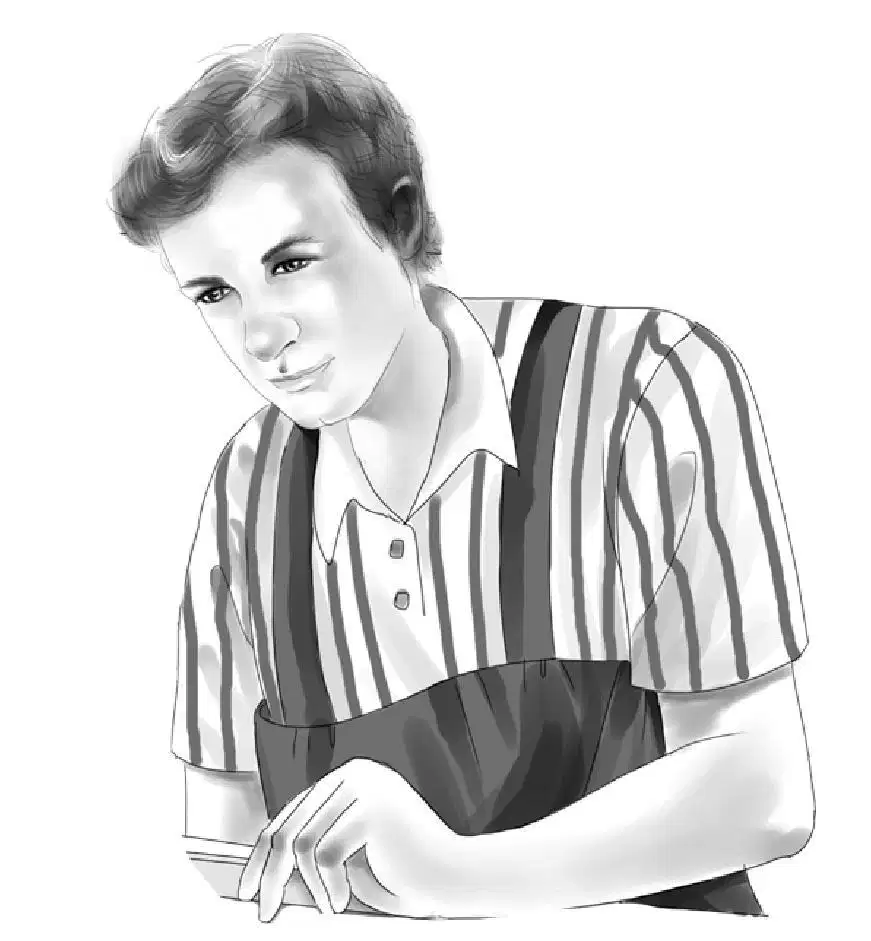
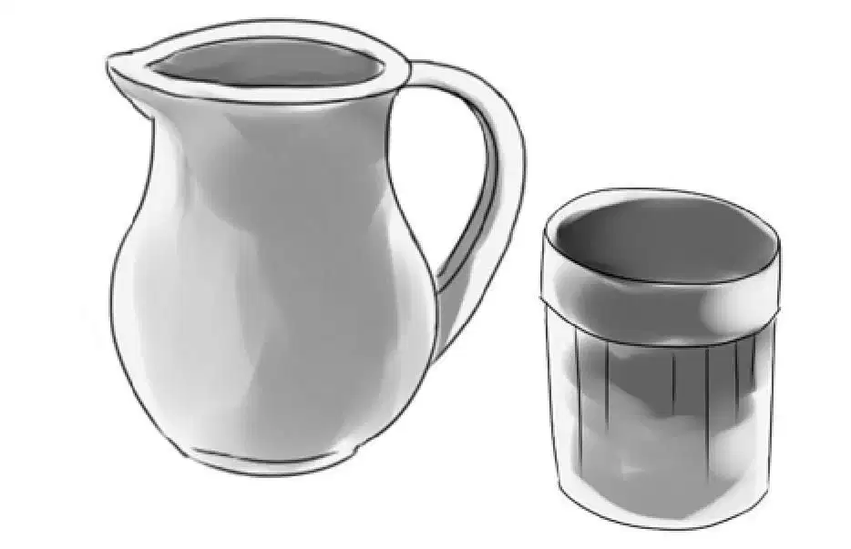
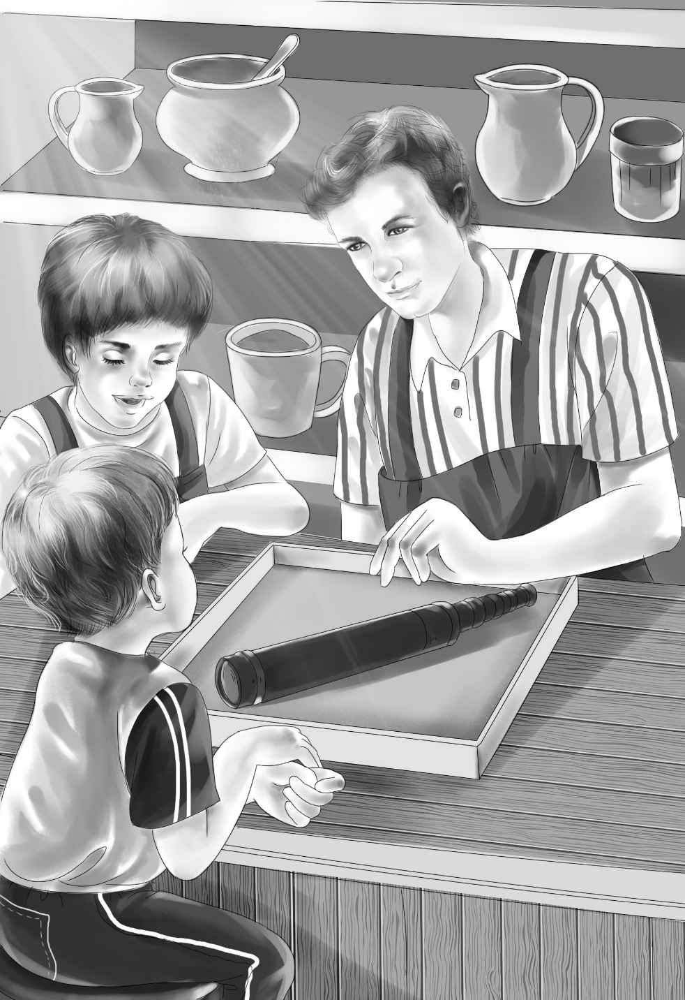
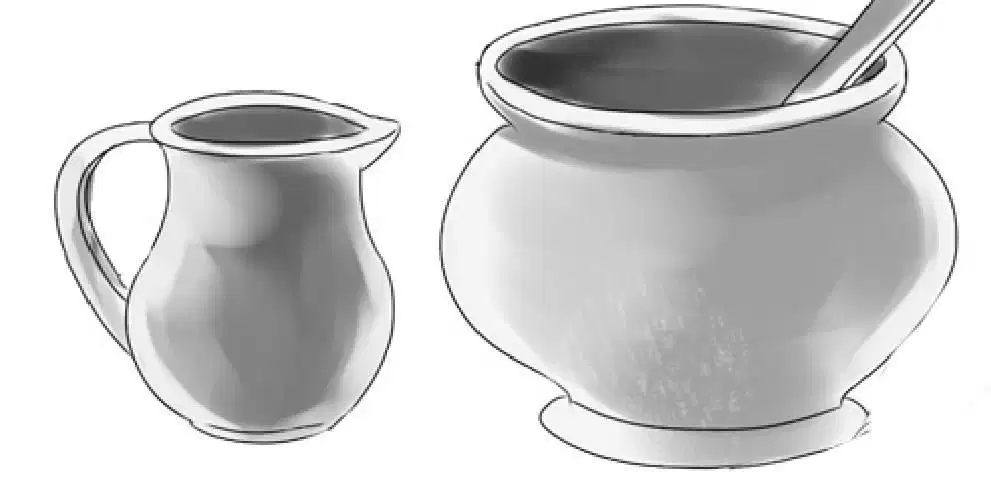
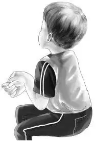
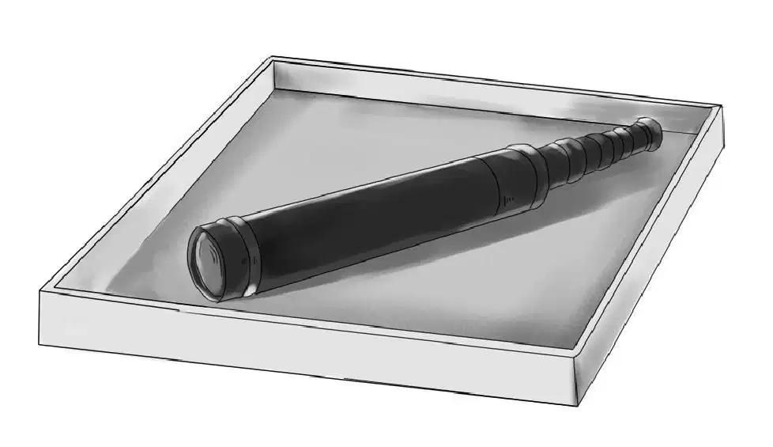

Benny and Violet told Henry, Jessie, and Mr. Alden all about the secret room in the attic. Everyone tried to guess why the room had been closed, but no one had any new ideas.
Benny said, “Mr. Beach thought Uncle Max might have a clue. He’s going to take Mrs. Beach and the boys to see Uncle Max tomorrow. He wants to explain about the telescope. He asked if we would come, too.”
“I’d like to,” Jessie said. “But do you think we’d be in the way? I’m sure Sammy and Jeffrey haven’t had their mother and father take them anywhere very often.”
Henry said, “The boys think their parents are more interested in their work than in the things their sons do. It’s too bad.”
“But Mr. Beach asked us,” Benny said. “Their car won’t hold all of us. Henry, why don’t you drive our station wagon?”
That was the way it turned out. Violet and Benny looked at each other when Mr. Beach said, “Come, Sammy. You sit with me. Then we can talk. Jeffrey, you hold the spyglass and sit with your mother.”
As Henry started the car he heard Mr. Beach say,“I wish Max were doing better with his restaurant. So few people use the Shore Road that he hasn’t any customers.”

Jeffrey nodded. “That’s right. But he’s the best cook in the world.”
Sammy said, “And Uncle Max likes to see people enjoy his cooking. It makes him happy.”
“The trouble is that Max won’t let anyone help him,” Mr. Beach said.
Suddenly Sammy said, “Maybe we can help him with some ideas. I think that would be all right.”
“Perhaps you’re right,” said Mrs. Beach.
Uncle Max could hardly believe his eyes when the car drove up to his door. He came down the steps and shook hands with his brother.
He said, “John, how wonderful to see you! Welcome, everybody, and come right in.”
Sammy said, “We told you we’d be back.”
“Yes, you did. And I knew you would, too. Come and sit down.”
Sammy couldn’t wait any longer. “Look, UncleMax—here’s the telescope!”
“You found it? Where? ”asked Uncle Max looking in surprise from Sammy to Jeffrey.
“In a knothole in the oak tree,” Jeffrey said.
“Well!” Uncle Max said, and then he thought a moment. “I believe the man from next door who helped us build our tree house must have put the telescope in the knothole. He just forgot to tell us. I’m sure now it was that kind man.”
Mr. Beach said, “That’s what we think, too, Max. I didn’t have it, and you didn’t have it.Nobody had it.”And he shook hands with his brother again.
“And we’ve got more news. A surprise and a mystery!” Sammy sat down on a stool and whirled around. Everyone else sat down at the big table.

“Sammy is right,” said his father. “It is a mystery. Let the boys tell it. Maybe you can help solve it.”
The two boys told about the round window and how they could see it with the telescope. Then they told about the hidden room and all the toys.
Uncle Max began to frown. “Oh, I wish I could remember,” he exclaimed. “I never knew about that room. But I did know the name of the family who lived there long ago. Now what was it? ”

“Try the alphabet,” said Jeffrey.
They all laughed, but Uncle Max began. “The name didn’t begin with A. And it didn’t begin with B. Now, C! I think it must have been C. Cook? Collins? No, those names aren’t right.”
“Cooper,” suggested Mrs. Beach.
“Carter,” said Jessie.
“Wait!” Uncle Max said. “Carter sounds almostright. Let me think. I know. Carver! That’s the name. I’m sure of it.”
Everybody looked happy and clapped.
“My father told me that a family named Carver built the house many years ago. It was at least a hundred years old when we lived in it.”
“Too bad I wasn’t interested in such things when I was a boy,”Mr. Beach said.“Can you remember anything else that might give the children a clue about the room?”
Max shook his head.“I’ll try to think of something else. But if I were there, I’d hunt some more in that room. There might be letters or papers or something else that would be a clue.”
His brother laughed and said, “I’m sure the boys and the Aldens will go over every inch of that room, Max. And now let’s talk about you.”
Uncle Max looked unhappy. “The diner isn’t doing very well,” he said. “But that’s not your worry, it’s mine.”
“It’s mine,” said Sammy. “I want to worry about you, Uncle Max.”
“Thank you, Sammy,”said Uncle Max.“I suppose I ought to close the diner and work at something else. But I do love to cook and see people eat.”
Mrs. Beach said, “Then you should not close the restaurant, Max. People ought to do the things they like to do. Never mind just working for money.”
Benny looked around. He said, “I think people like to eat where it’s bright. It seems dark here.”

Jeffrey added, “Maybe a new name would help. We used to go to the Jumping Jack Restaurant in New York just because we liked the name. The food wasn’t as good as yours.”
Jessie said,“I think people have forgotten about your place because they don’t use this road much any more. You need to do something special to make them want to come.”
“I could try a new name,”said Uncle Max. “And I could put in more windows myself.”
The Beaches and the Aldens talked about the restaurant until lunchtime. Then John Beach found out what delicious food his brother could cook. He and his wife had a chicken salad, but all the children had hot dogs.

When Henry and Mr. Beach started to pay Uncle Max, he said, “Oh, no! You are invited to lunch.”
Henry said, “No. It is silly for you to take in eight people for nothing.”
“My grandfather wouldn’t like it if we didn’t pay,” Benny said.
Uncle Max had to take the money.
When they were riding home,Jeffrey said, “Let’s go right up to the room and hunt around again. We might find something we missed.”
“And I haven’t even seen it,” Henry said.
“Nor I!” Jessie added.